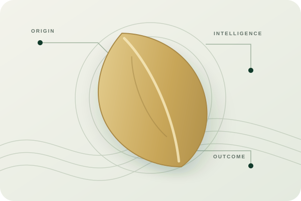

Supply Chain Transformation
Strategy, production planning, processing, quality, warehousing, inventory, distribution and operating-model improvement.
Explore →SEED SUPPLY CHAIN STRATEGY & TRANSFORMATION
Independent advisory for seed and agri-businesses navigating transformation, growth, resilience and global opportunity.

THE SAGE HARVEST PERSPECTIVE
Climate variability, production risk, quality, inventory, infrastructure and digital traceability are changing the economics of the seed industry.
We connect deep seed-industry experience with modern technology and independent advisory thinking to help organizations see the complete system, make better decisions and build resilient operating models.
THE CONNECTED SEED SYSTEM
A seed supply chain is a connected system. Improvements in one node can create value—or unintended consequences—across the network.

Strategy, production planning, processing, quality, warehousing, inventory, distribution and operating-model improvement.
Explore →AI, analytics, satellite and weather intelligence, traceability and decision-support systems for modern agriculture.
Explore →Climate-smart supply chains, resource efficiency, carbon and MRV-oriented approaches and sustainability assurance.
Explore →GLOBAL EXPANSION & TRADE
Sage Harvest supports organizations exploring international markets, export opportunities, strategic partnerships and cross-border supply chains.
Our emerging international focus connects market intelligence, commercial strategy, partner facilitation and disciplined execution.
SUPPLY CHAIN WITH RAJA
The Sage Harvest knowledge platform extends beyond consulting engagements through video conversations and practical perspectives on supply chains, seed, AI, sustainability and industry transformation.
Selected conversations and explainers will be connected here as the Sage Harvest media library develops.
TRANSACTION & ASSURANCE
Independent supply-chain due diligence, performance reviews, internal audits and sustainability assessments for management teams, investors and transaction teams.
Explore M&A Due DiligenceTHE SAGE HARVEST APPROACH
FOUNDER & PRINCIPAL ADVISOR
Nearly four decades across the seed and agri-business ecosystem.
Experience across Corteva, Advanta, Shriram Bioseed and SeedWorks International, bringing operating knowledge, transformation thinking and a practical industry perspective to Sage Harvest.
Meet the founder →